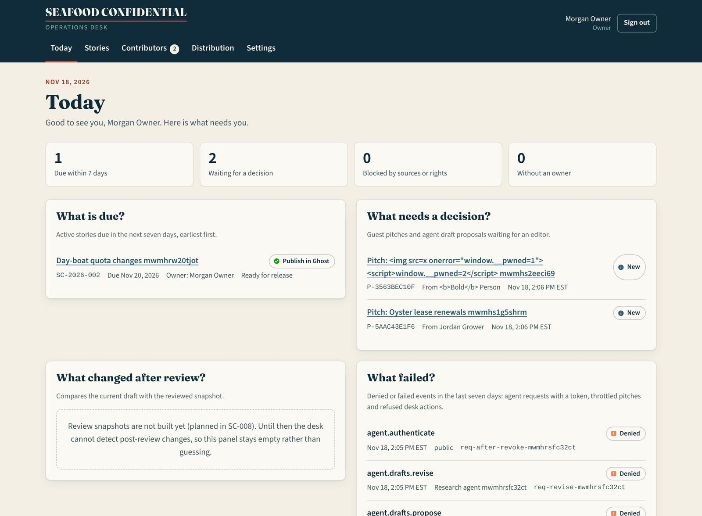
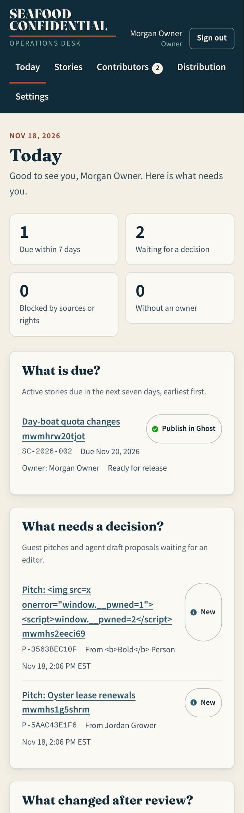
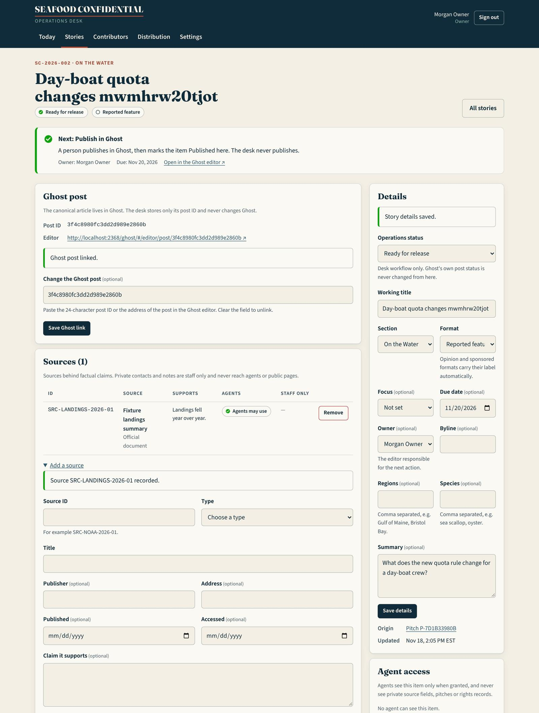
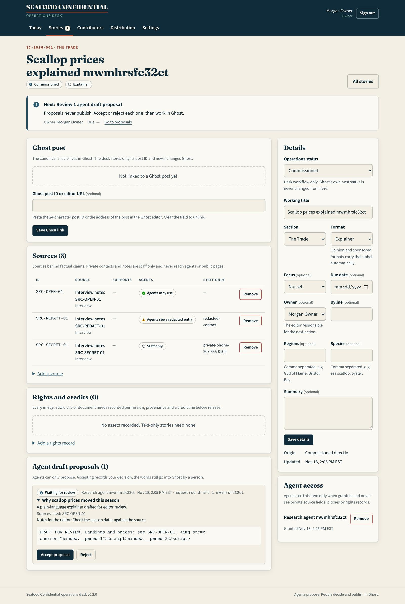
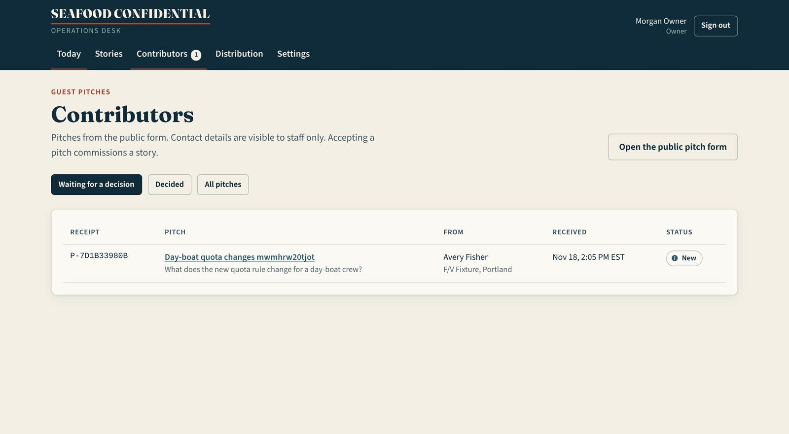
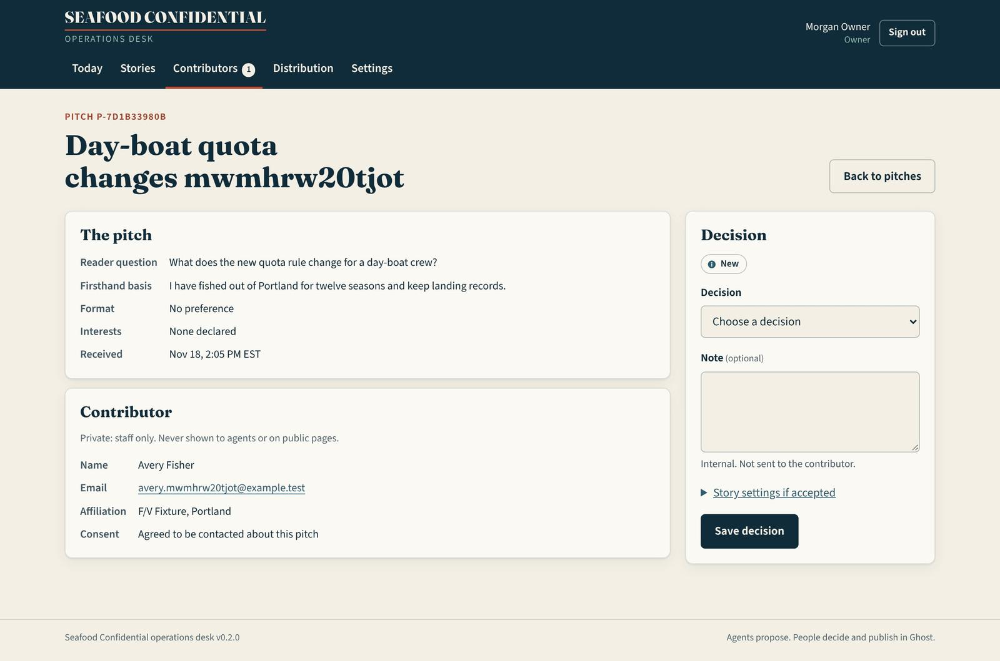
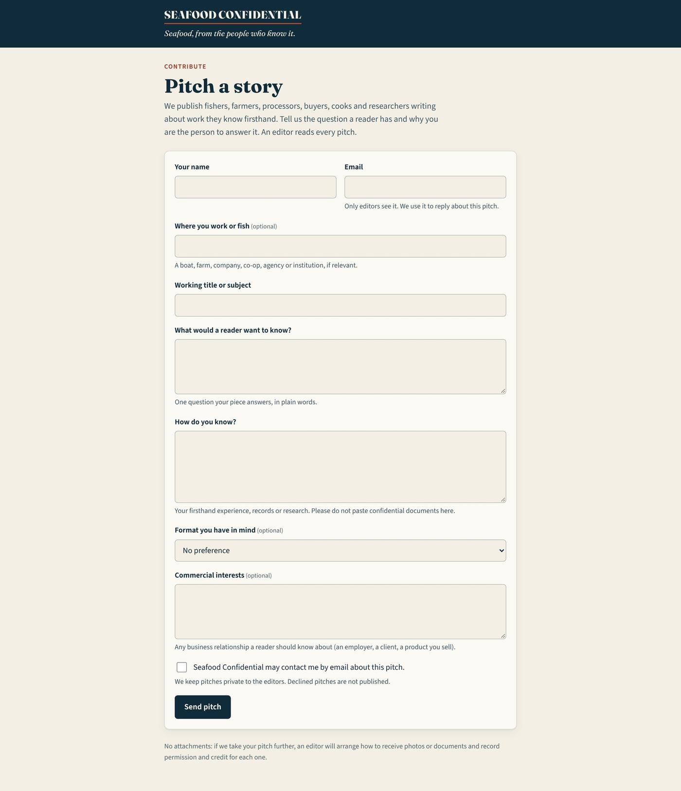
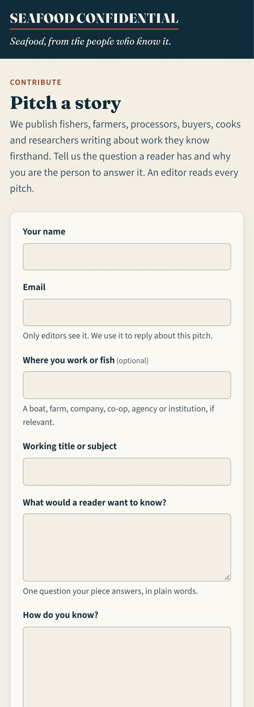
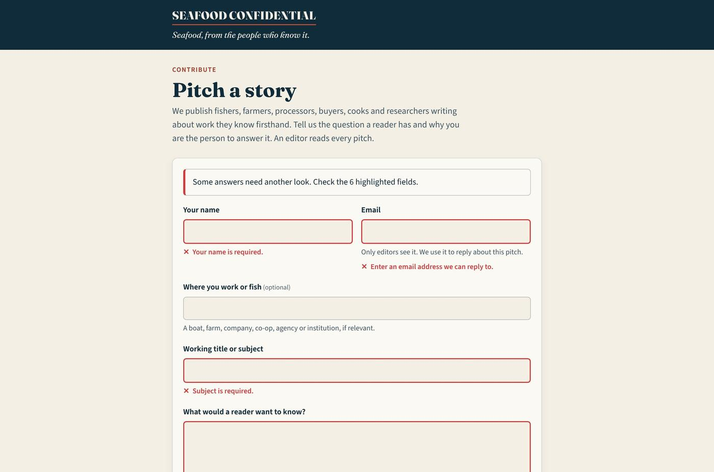
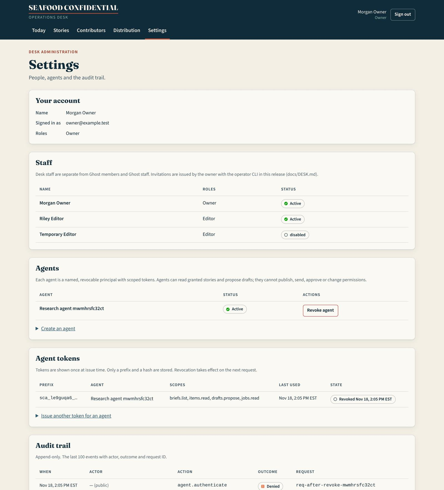

| Entry | DL-20261118-02 |
|---|---|
| Session | S01, turn 2 |
| Version | 0.2.0 |
| Branch | claude/intelligent-cannon-d1nqq6 |
| Base commit | e88eadfb68e1 |
| Started | Nov 18, 2026, 12:54 PM EST |
| Recorded | Nov 18, 2026, 2:10 PM EST |
| Tickets | SC-005, SC-006, SC-007, SC-009 |
| Workstreams | WS-ENV, WS-TRACK |
| Status | complete |
Operations desk foundation and first vertical slice
Summary
The private operations desk now exists and runs end to end on a local Supabase stack. Staff sign in with a one-time email link; a public pitch becomes a queued pitch, then a commissioned story with an owner, a single next action, a unique link to its Ghost post, source records and rights records, and a release gate that refuses "ready" until sources and credited, cleared rights exist. Agents can read only the stories they are granted, with confidential sources hidden, and can only propose drafts that wait for a person. Every request and change lands on an append-only audit trail with a request ID. Nothing is deployed and nothing publishes: Ghost stays the only place where people publish.
What changed
Database (supabase/)
- One migration creates the
appschema (principals, staff assignments, pitches, editorial items, sources, asset rights, agent grants, draft proposals) and theprivateschema (hashed agent credentials, audit trail, intake throttling). Every table has Row Level Security and explicit grants. - The desk connects as
desk_app, a login role with no privileges of its own, and switches toauthenticated,desk_agentoranoninside each transaction after binding the caller (ADR-003). Agent tokens are verified inside the database, so revocation applies on the next request. - Workflow functions:
submit_pitch(consent-gated, bounded, throttled per client and overall, returns only a receipt, and records throttled attempts),dispose_pitch(locks the pitch, issues the nextSC-YYYY-NNNcontent ID on acceptance), agent credential issue/revoke/list for owners, and an audit function whose actor is always derived, never supplied. Trigger-written audit rows inherit the transaction's request ID. - 93 pgTAP assertions in four files cover grants, RLS, staff isolation, agent isolation and revocation, intake, disposition and the audit trail.
Desk app (apps/desk/)
- Next.js 16.4 (App Router, React 19.3, TypeScript 6.0.3) with a Node
proxy.tsthat assigns request IDs, sets a nonce Content-Security-Policy and refreshes the Supabase session; hardening headers innext.config.ts. - Pages: Today (what is due, what needs a decision, an honest empty "what changed after review", what failed), Stories (filters, commissioning, story detail with next action, Ghost link, sources, rights, agent proposals and agent access), Contributors (pitch queue and decisions), Distribution (states plainly that nothing is built or sent yet), Settings (staff, agents, one-time token display, token revocation, audit trail), sign-in,
/no-access, the public/pitchform, error and not-found pages. - Working Waterfront tokens compiled from
brand/tokens.json, self-hosted Fraunces and Source Sans 3, status always shown as icon plus label, accessible forms with linked errors and focus management. - Agent gateway
POST /api/agent/v1on the kit contract:briefs.list,items.read(server-side redaction),drafts.propose(cited sources must exist and be visible; durable idempotency with conflict detection),jobs.read;drafts.reviseandsocial.proposeanswer 501 until SC-008 and SC-011. - Telemetry: OpenTelemetry through
instrumentation.ts, pino JSON logs with trace IDs and redaction, request-error hook. - Operator CLIs for local work and first-owner bootstrap (
staff,agent), andenv:local, which writes separate git-ignored environment files for the app and for the CLIs so the app never holds the Supabase secret key.
Tests, CI and tooling
- Vitest (unit), Playwright (end to end, desktop and phone) with axe WCAG 2.2 AA on every page visited, and a client-bundle secret scan.
- CI gains a
deskjob that starts a local Supabase stack and runs database tests, static checks, the production build with the bundle scan, and the end-to-end suite. - Root scripts
desk:*anddb:*;pnpm checkruns the desk's static checks. Validators skip build output; gitleaks allowlists only build output and the two local env files.
Docs and tracking
docs/DESK.md(architecture, security model, gateway reference, setup, tests, telemetry), ADR-003 updated with the decisions made while building, README map, AGENTS.md desk conventions, CONTRIBUTING version rule, CHANGELOG 0.2.0.
Decisions
- Developer defaults, not founder decisions. The planning brief's recommendations became ADR-003 defaults so work could start; founder questions (accounts, budget, channels) stay open and block only hosted deployment.
- Cache Components off. Every desk page is per-user; revocation must apply on the next request; nonces need per-request rendering.
- One authorization boundary. RLS decides; the app re-checks identity everywhere but never widens access. SQL is tagged templates only (lint-enforced).
- Throttled intake returns no receipt instead of raising, so the denial stays on the audit trail (an exception would roll it back).
- Client addresses for throttling honour only
DESK_TRUSTED_PROXY_HOPSproxies from the right ofX-Forwarded-For; anything a client prepends is ignored. - Agents never see Ghost IDs (only
ghostLinked), pitches, rights records or private source columns. - Kept ESLint 9.39 (ESLint 10 blocked by plugin peer ranges) and
@opentelemetry/api1.9.1 (required by@vercel/otel2.3).
Problems and resolutions
- The test runner could not
SET ROLE desk_agent: Postgres 16+ gives a role's creator ADMIN without SET. Fixture grants SET inside the test transaction only. - pgTAP failed while acting as an agent (no USAGE on
extensions): granted within the test transaction. - A throttled pitch's audit row vanished with the raised exception: the function now returns NULL.
/pitchprerendered statically, so its scripts had no nonce: it renders per request.- Fontsource registers
Fraunces Variable, notFraunces: the desk's token build prepends the variable family names. - React's purity lint flagged
Date.now()in Server Components: time filters moved into SQL. - Visual review found three defects: due dates shown a day early (UTC dates formatted in New York time), the rust rule spanning the whole masthead, and the rights picker reverting after a save (React 19 form reset). All fixed and re-verified in screenshots; the phone nav now wraps so Settings is visible.
- The end-to-end suite tripped the real intake throttle after several runs from 127.0.0.1: tests now act as distinct documentation-range clients, and production honours only trusted proxy hops.
- Independent security review (a separate agent, adversarial, probing as an editor and as an agent): no Critical or High findings; three Medium and five Low, all fixed and covered by new assertions. Anonymous gateway traffic no longer touches the database or the audit trail, failed authentications are limited per client, gateway transactions are capped so staff keep connections, and each agent has a request budget counted in the database. Intake throttling trusts only configured proxy hops (required in production) and is serialized. Staff can update only workflow columns; reviewers and deciders are stamped by the database; cleared rights need a credit line; sources, rights and refused actions are audited. Agents read sources only through a SQL function that redacts, can insert only proposal content columns, can record only
agent.*events, and stay revoked for good, with their tokens. Request IDs are strict and allow-lists ignore prototype keys. - Recording the agent-only audit rule first broke trigger-written audit rows for agent proposals; audit writing was split into an internal writer for triggers and a restricted API entry point.
- The mutation harness showed some audit-count assertions also counted rows from earlier end-to-end runs, and fixtures collided with existing identities: assertions are now scoped to the test's own transaction and fixture emails are unique, so the suite is correct on fresh and used databases.
Evidence
| ID | Kind | Result | What it shows |
|---|---|---|---|
| EV-0019 | test | pass | 108 pgTAP assertions on local Supabase, also on a database already used by end-to-end runs (AT-03, AT-04, AT-06, AT-07, AT-12, AT-13, AT-25 at the database layer) |
| EV-0020 | test | pass | Mutation test: all 11 deliberate policy breaks are caught by named assertions |
| EV-0021 | test | pass | 67 unit tests, including every contract example |
| EV-0022 | test | pass | 24 end-to-end tests on a production build, desktop and phone, zero axe WCAG 2.2 AA violations (AT-03, AT-04, AT-06, AT-07, AT-12, AT-13, AT-18) |
| EV-0023 | test | pass | No secrets in bundles, gateway responses or logs, with a planted-secret control (AT-23) |
| EV-0024 | review | pass | Independent security review: no Critical or High; every Medium and Low finding fixed and re-tested |
| EV-0025 | observation | info | Visual review: four defects found, fixed and re-verified |
Commands: pnpm db:test, pnpm --filter @sc/desk test, pnpm desk:build, pnpm desk:e2e, pnpm check. Scenario statuses in docs/ACCEPTANCE_TESTS.md changed from UNRUN to PASS for AT-03, AT-04, AT-06, AT-07, AT-12, AT-13, AT-18, AT-23 and AT-25: deliberate kit edits backed by the records above, on the local stack only. SC-005, SC-006, SC-007 and SC-009 moved from planned to in progress.
Visual results
 |
 |
 |
 |
 |
 |
 |
 |
 |
 |
A signed-in identity without a staff role sees only the no-access page. All names and addresses in the screenshots are test fixtures.

Risks and open questions
- Hosted Supabase must accept the role-membership grants and transaction-scoped settings through its pooler (ADR-003 review trigger); verify in staging (SC-015).
- Staff invitations and role changes are CLI-only in this version.
- The gateway's flood guards are per instance; several instances need a shared or platform limiter in front.
- The audit trail is append-only and unbounded; retention and archiving belong with exports and backups (SC-014).
- The global intake ceiling protects storage but lets a determined sender pause intake for an hour; a privacy-respecting challenge (for example Cloudflare Turnstile) is a founder decision.
- The
desk_appconnection is the trust boundary for identity binding: keep the URL server-only.
Next actions
- Founders: answer the SC-001 account and budget questions so a hosted Supabase project and a deployment target can be created.
- SC-002: Ghost publication and staff roles, then real Ghost post IDs flow into the desk.
- SC-008: read-only review snapshots and stale detection, which unlock
drafts.reviseand the "What changed after review?" panel. - Continue SC-009: an MCP adapter on the same gateway, correction proposals for published items (AT-05).
Evidence referenced
| ID | Result | Summary | Observed |
|---|---|---|---|
| EV-0019 | pass | Database policy suite: 108 pgTAP assertions pass on the local Supabase stack (Postgres 17.12) | Files=4, Tests=108, Result: PASS, also on the populated database. Covers: table and column grants, RLS on every table, no views, pinned search_path on definer functions, desk_app without privileges (AT-25); readers, unassigned, disabled and revoked staff see nothing (AT-03); agents cannot update items or insert proposals that look reviewed (AT-04); agents have no access to pitches, rights or the sources table and read sources only through SQL-side redaction (AT-06); a revoked agent is denied while another authenticates, revocation is final and revokes its tokens (AT-07); a duplicate idempotency key is rejected by the database (AT-12/AT-13 database layer); intake throttling, disposition, sequential content IDs, derived deciders and reviewers, and the append-only audit trail with request IDs. |
| EV-0020 | pass | Mutation test of the policy suite: all 11 deliberate breaks are caught by named assertions | Caught: private_contact granted to desk_agent (4 assertions); agent item policy opened (3); staff pitch policy weakened to any signed-in user (5); whole-row UPDATE on pitches (2); reactivation guard dropped (1); revocation cascade dropped (1); credit-line constraint dropped (1); decider stamping dropped (1); idempotency unique constraint dropped (2); whole-row INSERT on proposals for agents (1); audit truncate guard dropped (1). |
| EV-0021 | pass | Unit suite: 67 Vitest tests pass | 8 files, 67 tests: the next action for every status, overdue and blocked states (SC-007); CSP, request IDs and redirect safety; trusted-proxy client addresses; agent token generation and parsing; canonical payload hashing for idempotency (AT-12/AT-13); redaction shape (AT-06); cursors; in-process rate guards; form validation; every contract example behaves as labelled, including posts.publish and members.export rejected (AT-04). |
| EV-0022 | pass | End-to-end suite: 24 Playwright tests pass against a production build, with no axe WCAG 2.2 AA violations | 24 passed. Public pitch to decision to story with next action, Ghost link (a pasted editor URL is reduced to the ID; a second item cannot reuse it), sources, rights and the release gate (SC-006, SC-007). A reader identity and a disabled staff member are denied on the next request (AT-03, SC-005). posts.publish, members.export, a status field in draft content and a client-supplied principal are rejected (AT-04). items.read omits staff-only sources and private fields; redacted entries are explicit (AT-06). A retry returns the original draft; a changed body gets 409 and the original stays intact (AT-12, AT-13). Revoking the token in Settings denies the next request (AT-07). Hostile markup in public and agent intake renders as inert text and no file upload exists (AT-18, desk surfaces only; Ghost cards are out of scope). Security headers, nonce CSP, strict request IDs, prototype keys rejected, no horizontal overflow at phone width. |
| EV-0023 | pass | No secrets or unnecessary private records in client bundles, gateway responses or logs | 44 shipped files against 11 rules, including the literal local secret values: no findings. Control: a planted INTAKE_HASH_SECRET value and an sb_secret_ string were both detected. Server log: 51 JSON lines with request and trace IDs and no emails, tokens, keys, database URLs or private contacts (agent requests log only the token prefix). items.read responses contain no private fields. The publishable key is also absent from browser bundles. |
| EV-0024 | pass | Independent security review of the desk: no Critical or High findings; all 3 Medium and 5 Low findings fixed and re-tested | Medium: anonymous gateway traffic wrote permanent audit rows and held shared connections (fixed: no database work without a token shape, failed-auth limit per client, 4 concurrent gateway transactions, per-agent budget in the database); intake throttle keyed on client-controlled X-Forwarded-For and racy (fixed: trusted proxy hops required in production, shared buckets otherwise, advisory lock); staff could rewrite whole rows and several changes were unaudited (fixed: column-level UPDATE grants, database-stamped reviewers and deciders, credit-line constraint, audit triggers on sources and rights, audited refusals). Low: prototype keys passed the section allow-list (Object.hasOwn and a database check); docs overstated audit coverage (corrected); raw agent request IDs stored (strict IDs); revoked agents could be reactivated (final revocation that revokes tokens); agent rules looser than the gateway (column-level INSERT grants, SQL-side source redaction, agents limited to agent.* audit events). |
| EV-0025 | info | Visual review of desktop and phone screenshots: four defects found and fixed, then re-verified | Fixed: due dates rendered a day early (UTC dates formatted in New York time; now formatted as calendar dates); the rust wordmark rule spanned the whole masthead (now under the wordmark only); the rights status picker reverted after saving (React 19 form reset; remounted per status); the phone nav hid Settings off-screen (now wraps). Brand values come only from brand/tokens.json; status is always icon plus label; zero axe violations. |